Rajasthan's royal cities in one sweep: Jaipur's palaces, holy Pushkar and Ajmer, Jodhpur below Mehrangarh, golden Jaisalmer and a night in the Thar, a quiet stop in Jalore and the lakes of Udaipur. Palace hotels and courtyard dinners suit this route well. This itinerary is built from our nights-per-place outline; the day plans, timings and changes are ours.
See it for yourself
Photos from the journey
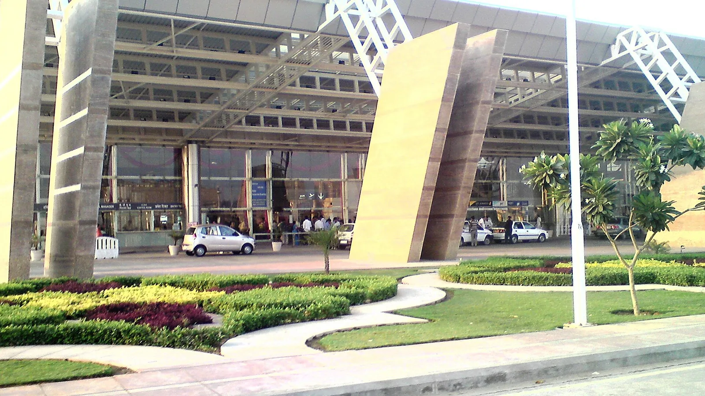

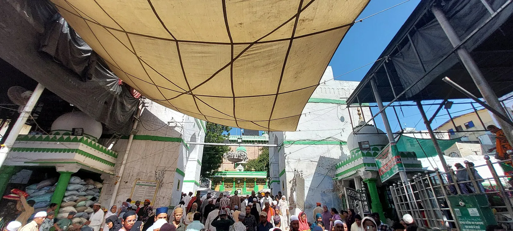
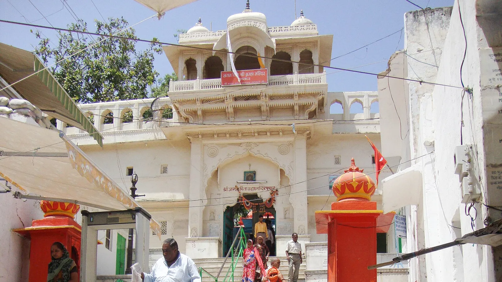
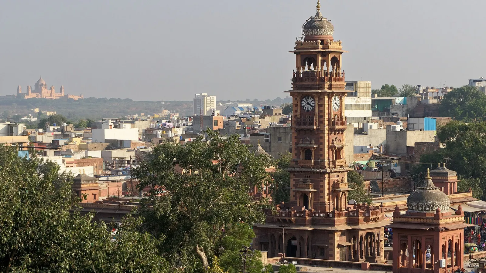
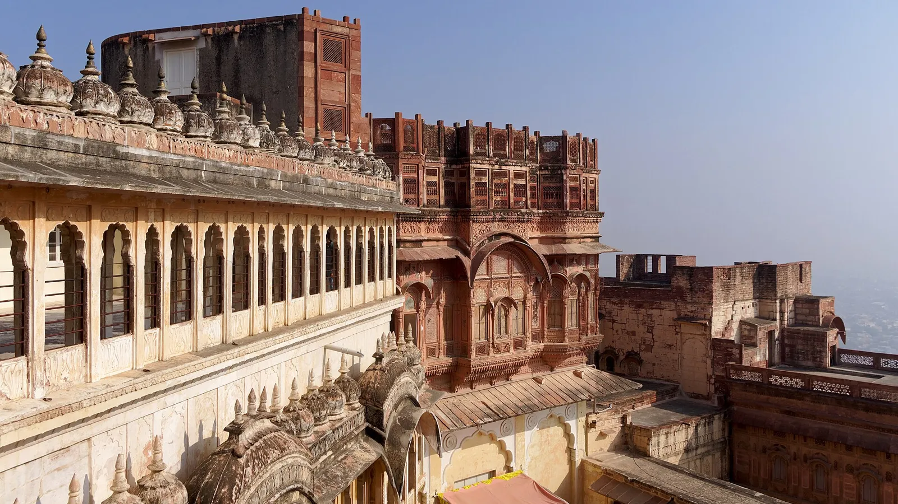
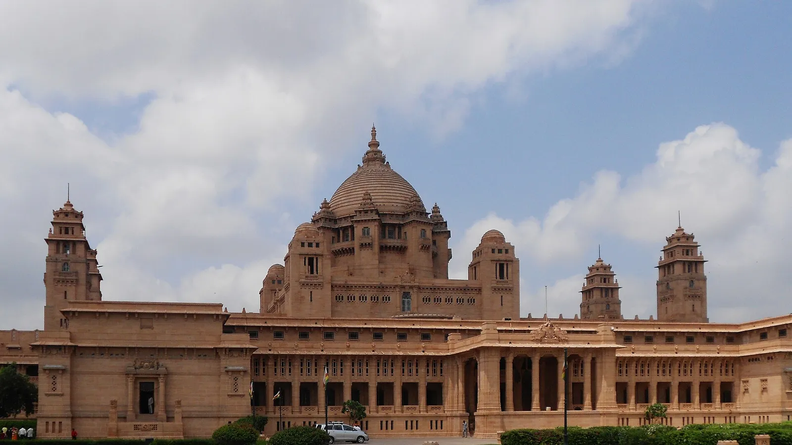
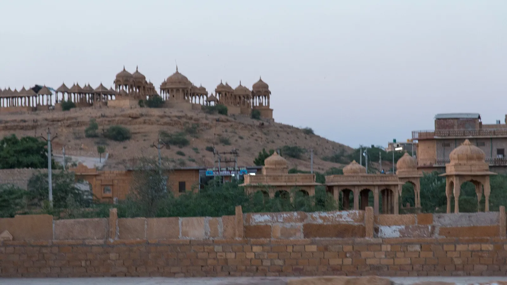
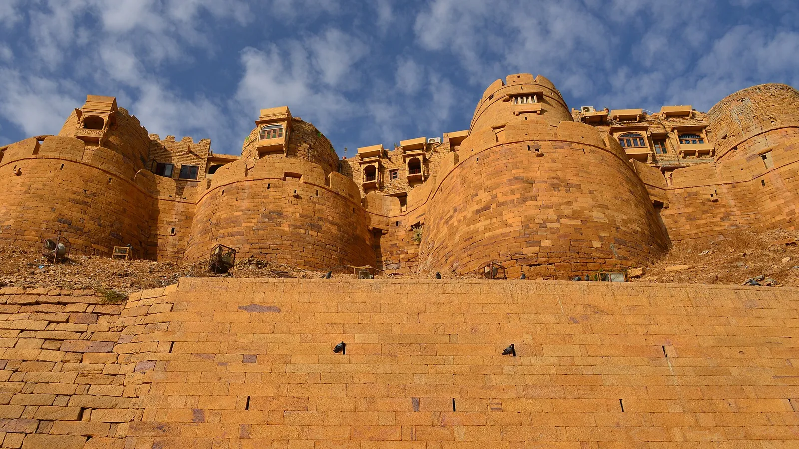
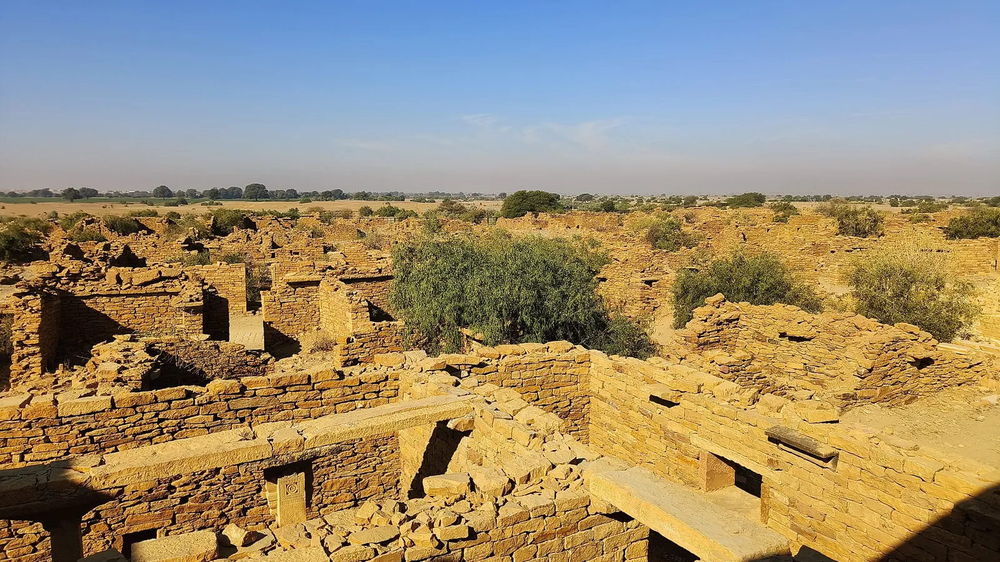
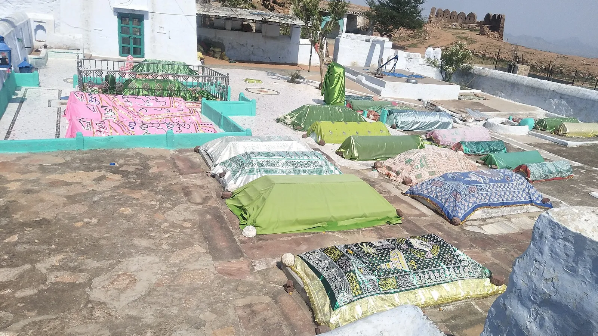
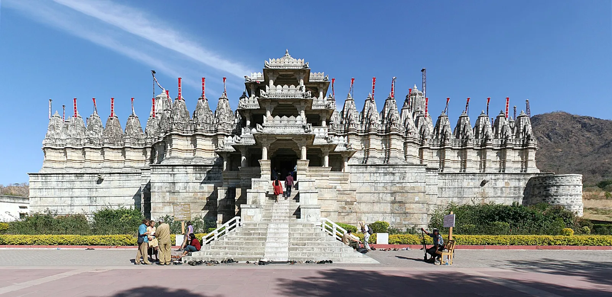


Where you go
The journey on one map
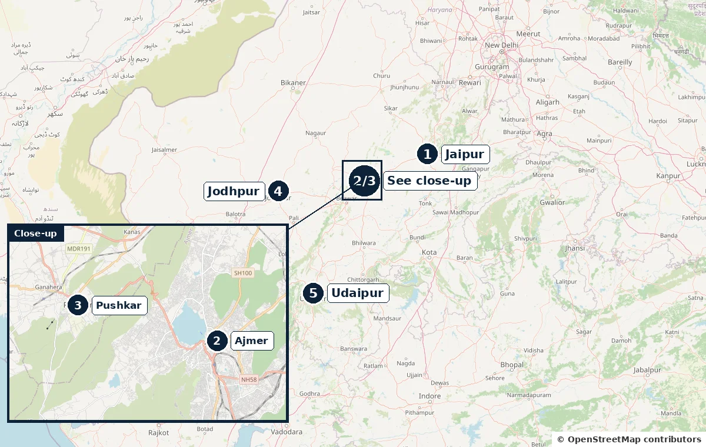
Day by day, in short
Daily travel brief
Distances are by road for the whole day. The full plan with timings comes with your detailed itinerary.
-
1
Arrive in Jaipur
- Evening: a walk in the bazaars around Hawa Mahal.
-
2
Amer Fort and the Pink City
City Palace Jaipur Jantar Mantar Jaipur
- Amer Fort: walk or take a jeep up; we do not recommend the elephant rides.
- Buy block prints and blue pottery in Jaipur.
-
3
Ajmer Sharif and holy Pushkar
- Ajmer Sharif Dargah: cover your head; remove shoes.
- Pushkar is a holy town: no meat, eggs or alcohol.
-
4
Pushkar's ghats and Brahma temple
- Decline 'free' flowers at the ghats: they lead to a demand for money.
-
5
To Jodhpur, the blue city
- Try mirchi vada and makhaniya lassi.
-
6
Mehrangarh and Jaswant Thada
- The fort's zip-line is a fun extra for active travellers.
-
7
Umaid Bhawan and a Bishnoi village
- A Rajasthani thali at a family home can be arranged.
-
8
Across the Thar to Jaisalmer
- The desert is cold at night in December and January.
-
9
The living fort and the havelis
- Jaisalmer Fort: no leather inside the Jain temples.
- Pack an overnight bag for the desert camp tomorrow.
-
10
A night in the Thar desert
- Camel ride on the dunes: choose a quieter dune area than Sam if you prefer peace.
- Camps are cold at night; ask for extra blankets.
-
11
South to Jalore
- Jalore is optional; the night can move to Jawai for a leopard safari.
-
12
To Udaipur via Ranakpur
- Ranakpur Jain temple: non-Jain visitors from about 12:00 to 17:00.
- Ranakpur Jain temple: no leather, shorts or bare shoulders.
-
13
Udaipur's City Palace and Lake Pichola
- Dharohar folk dance at Bagore ki Haveli runs most evenings.
-
14
Fly home from Udaipur
- Transfer to the airport: leave 4 hours before an international flight and 3 before a domestic one.
- Pack liquids and souvenirs in checked baggage.
Local know-how
Travel hacks from our desk
UPI, cards and cash
UPI works almost everywhere, even at small stalls. Keep some cash in INR 100 and 200 notes for temples, parking, tips and places where the network is weak.
Temple and shrine etiquette
Cover shoulders and knees. Remove shoes where asked, and carry socks for hot stone floors. Leather belts and bags are not allowed inside some Jain and Hindu temples. Ask before photographing people and inside shrines.
Water and street food
Drink sealed bottled or filtered water only. Choose busy stalls where food is cooked in front of you, and skip cut fruit and ice from roadside stalls.
Driving times
Indian roads are slower than the kilometres suggest: plan on 40 to 50 km an hour on highways and much less in hills and towns. Your driver's breaks and meal stops are built into the timings.
Plugs and tipping
Plugs are Indian three-pin and two-pin, 230 volts. Tipping drivers and guides about INR 300 to 500 a day is appreciated.
When to go
Best time to visit for this journey
November, during or after the Pushkar fair, or February.
October to March. Avoid April to June, when the desert passes 45°.
The package
What's included
Included
- Hotels as listed with breakfast
- Private air-conditioned car with driver for all transfers and sightseeing
- 24/7 support from Blue Diamond Voyage
- Desert camp night with dinner
Not included
- Flights and trains not listed as included
- Entry fees, guides, boats and activities
- Lunches and dinners unless stated
- Travel insurance
The detailed itinerary
Some journeys are planned. Ours are crafted.
The full 14-day plan is ready: hour-by-hour timings, drive times, temple dress codes, food for your diet and a route map for every day. Tell us your dates and your city, and we'll send it to you on WhatsApp, shaped around you.
- Hour-by-hour timings
- A route map for every day
- Hotel and room details
- Visa and entry steps
- Vegetarian and Jain dining
24/7 travel desk+91 97148 59797+91 98242 21400
Photo and map credits
- Jaipur International Airport: Sranjanm2002, CC BY-SA 3.0, via Wikimedia Commons
- Amer Fort: S Sundararajan, CC BY-SA 3.0, via Wikimedia Commons
- Ajmer Sharif Dargah: Pinakpani, CC BY 4.0, via Wikimedia Commons
- Brahma Temple Pushkar: Adityavijayavargia, CC BY-SA 4.0, via Wikimedia Commons
- Ghanta Ghar Jodhpur: Jakub Hałun, CC BY-SA 4.0, via Wikimedia Commons
- Mehrangarh Fort: Jakub Hałun, CC BY-SA 4.0, via Wikimedia Commons
- Umaid Bhawan Palace: Yann (talk), CC BY-SA 4.0, via Wikimedia Commons
- Vyas Chhatri: Daniel VILLAFRUELA, CC BY-SA 3.0, via Wikimedia Commons
- Jaisalmer Fort: Clément Bardot, CC BY-SA 4.0, via Wikimedia Commons
- Kuldhara: कृष्ण कान्त शर्मा, CC BY-SA 4.0, via Wikimedia Commons
- Jalore Fort: Hanif siwanchi, CC BY-SA 4.0, via Wikimedia Commons
- Ranakpur Jain Temple: Ingo Mehling, CC BY-SA 3.0, via Wikimedia Commons
- City Palace Udaipur: Hirumon, CC BY 3.0, via Wikimedia Commons
- Maharana Pratap Airport: Northside, CC BY-SA 3.0, via Wikimedia Commons
- Maps: © OpenStreetMap contributors; road routes by OSRM.